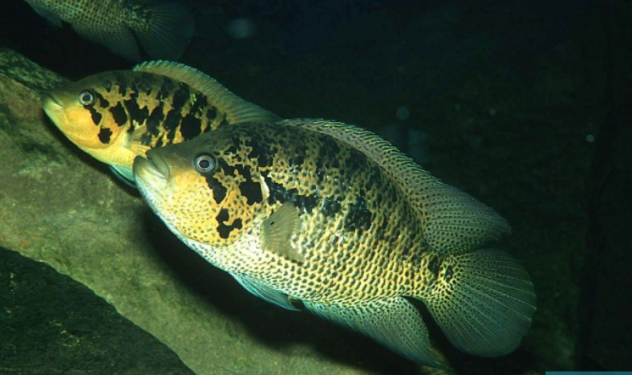

Systématique
- Ordre : Cichliformes
- Famille : Cichlidae
- Genre : Parachromis
- Espèce : P. friedrichsthalii

Parachromis friedrichsthalii est un grand cichlidé d'Amérique centrale, morphologiquement proche de P. motaguensis et P. loisellei. Il se distingue par une coloration de fond jaune à dorée, marquée de taches noires irrégulières formant souvent des ocelles ou des bandes verticales brisées sur les flancs.
C'est un poisson robuste au corps comprimé latéralement, doté d'une mâchoire protractile puissante et d'une dentition adaptée à la prédation (dents caniniformes). Les mâles peuvent atteindre une longueur standard de 28 à 30 cm, tandis que les femelles restent généralement plus petites, autour de 20 à 25 cm.
Bien que populaire chez les amateurs de gros cichlidés pour sa coloration spectaculaire, c'est une espèce exigeante en termes d'espace et de gestion de l'agressivité intraspécifique.
C'est un prédateur piscivore territorial et agressif, typique du genre Parachromis. Son tempérament est vif et il défend son territoire avec férocité, particulièrement en période de reproduction.
Il ne convient pas aux aquariums communautaires classiques. Il doit être maintenu soit en couple formé (après une phase d'acclimatation délicate), soit avec d'autres cichlidés de taille et de tempérament similaires dans de très grands volumes. Il a tendance à creuser le substrat et peut déraciner les plantes.
Mode : ovipare (pondeur sur substrat découvert).
La reproduction est biparentale. Le couple nettoie une surface plane (pierre plate, racine) pour y déposer plusieurs centaines d'œufs. La femelle s'occupe de la ventilation des œufs tandis que le mâle défend le périmètre.
Les alevins éclosent après 3 à 4 jours et nagent librement quelques jours plus tard. Les parents sont extrêmement protecteurs et agressifs envers tout intrus durant cette période.
Dimorphisme sexuel : Les mâles sont plus grands et développent des extensions plus longues et effilées sur les nageoires dorsale et anale. Les femelles, bien que plus petites, arborent souvent des couleurs très contrastées et intenses (jaune vif et noir) spécifiquement en période de reproduction.
Espérance de vie : Environ 10 à 12 ans en captivité.
On le trouve dans les rivières, les lacs et les lagunes d'Amérique centrale, préférant souvent les eaux calmes ou à courant modéré avec de nombreuses cachettes (racines immergées, rochers) où il chasse à l'affût.
Répartition

Origine naturelle :
- Amérique centrale (versant Atlantique).
- Sud du Mexique (États de Chiapas, Quintana Roo).
- Belize, Guatemala et Honduras.
Paramètres de maintenance
Température : 24 à 28 °C.
pH : 7,0 à 8,0 (eau neutre à alcaline).
GH : 10 à 20 °dGH (eau dure).
Courant : Modéré, avec une bonne oxygénation et une filtration très efficace (gros pollueur).
Volume conseillé : Minimum 450 à 600 L pour un couple. Beaucoup plus pour une communauté de cichlidés.
Régime alimentaire
Régime : carnivore / piscivore.
Dans la nature, il chasse les petits poissons et les invertébrés.
En aquarium, il accepte les granulés pour gros cichlidés, mais nécessite des apports réguliers de nourriture crue : crevettes, moules, vers de terre, morceaux de poisson.